MOBILE PRODUCT · 0 → 1 · PRODUCT LEAD
Gbenda
Building a digital Christian community designed to help people grow in their relationship with God through prayer, reflection, anonymous conversations, and Bible study.
OVERVIEW
Turning a community mission into a digital product.
Gbenda Intercessory Ministry is a non-profit, faith-based organization committed to helping individuals develop and sustain an intimate relationship with God.
The online Christian community was created in January 2023, with the mobile application becoming a way to extend that mission into a digital environment.
The name Gbenda comes from the Tiv language of West Africa and means "The Way."
As Founder and Product Lead, I took the product from the initial idea through product definition, design, development, testing, mobile release, and iteration.
THE PROBLEM
Creating a safe space to ask, pray, reflect, and grow.
The product was created around a simple need: people can have questions about faith, personal struggles, or prayer needs, but may not always feel comfortable sharing them openly.
I wanted to create a space where people could ask questions without feeling judged, request prayer without being exposed, journal their thoughts, and participate in Bible study.
The product therefore needed to support both private reflection and community participation while remaining accessible from a mobile device.
PRODUCT GOAL
Make spiritual growth more accessible.
The primary product goal was to help users develop a closer relationship with God by giving them a safe and accessible environment for prayer, reflection, questions, and Bible study.
The broader mission was to use technology to support people in developing an intimate relationship with God without physical or mental boundaries.
USERS
Designing around people seeking spiritual growth.
Primary users
Christians and people seeking a deeper relationship with God who want a safe space for questions, prayer, reflection, and free Bible study.
Community participants
Users who want to support others by visiting shared prayer requests and participating in the wider intercessory community.
Administrators
Administrators responsible for managing the community and supporting the experience behind the product.
Core user need
A way to seek guidance, pray, reflect, study, and consistently engage with their faith in one place.
PRODUCT DEFINITION
Turning the mission into product experiences.
I translated the broader mission into a set of experiences designed around the ways users would interact with the community.
My Notes
A personal space where users can write their thoughts, feelings, reflections, and other personal notes.
Anonymous Chat
Users can ask questions anonymously and seek guidance without having to publicly identify themselves.
Intercession
Users can post prayer requests anonymously and return to the space to pray for other members of the community.
Prayer Points
Users can save prayer points and keep track of answered prayers as part of their personal faith journey.
Bible Study
A daily study experience designed around studying the Word together, verse by verse.
Community
A shared digital environment where users can participate in prayer, questions, reflection, and spiritual growth.
PRODUCT EXPERIENCE
A closer look at the product.
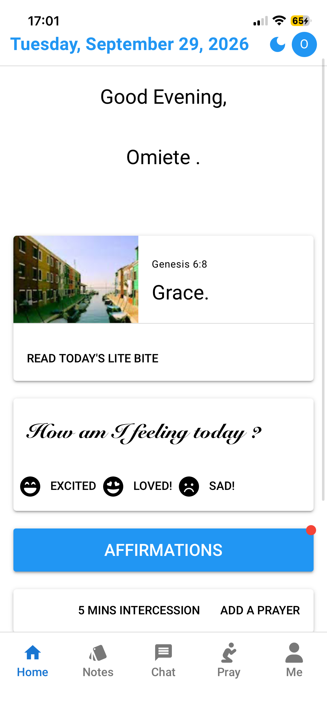
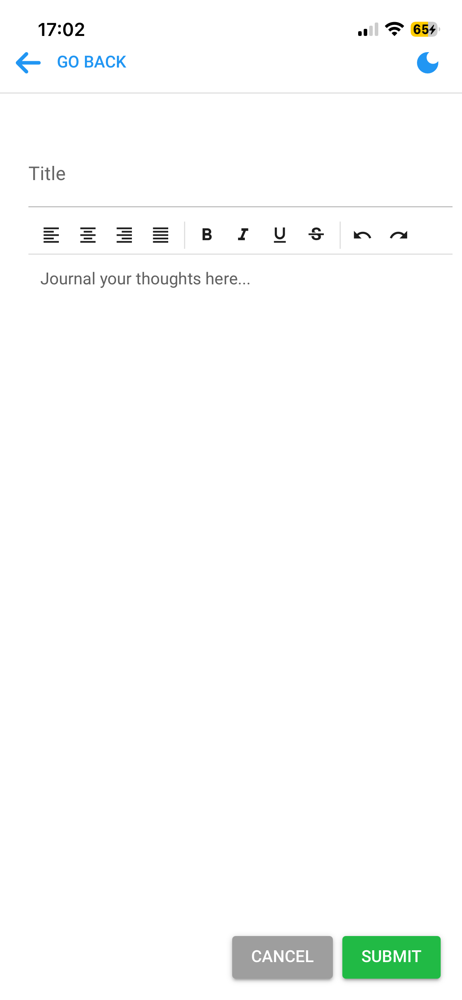
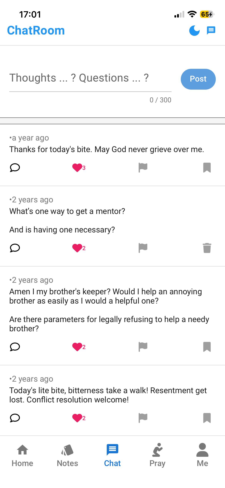
USER FLOW
Designing around recurring user behaviours.
Rather than designing the product around one isolated feature, I structured the experience around several recurring activities that support the broader goal of spiritual growth.
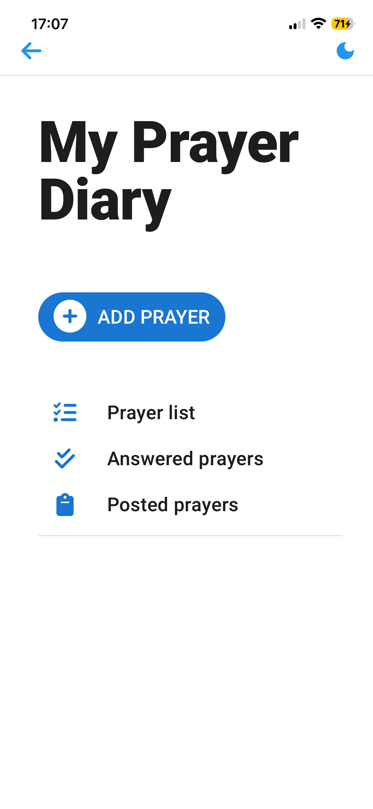
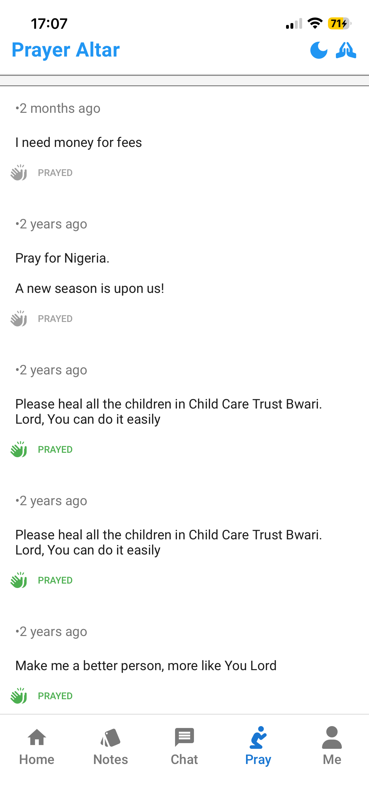
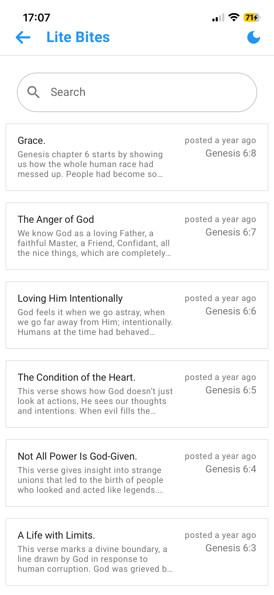
PRODUCT DECISIONS
Designing for trust, privacy, and continued engagement.
Make anonymity part of the experience.
Anonymous participation was important because users needed to feel comfortable asking questions and sharing prayer requests without exposing themselves.
Give users different ways to participate.
Instead of making the product depend on one interaction, I created multiple paths through questions, prayer, journaling, and Bible study.
Make prayer a continuing journey.
The ability to save prayer points and track answered prayers gives users a way to return to previous prayers and reflect on their progress.
Iterate based on real feedback.
User feedback influenced interface placement, typography, styling, and how different features were presented.
DESIGN & ITERATION
From idea to interface, then iterate.
I designed the interface myself and moved directly from product ideas into implementation rather than creating formal Figma wireframes.
The interface evolved significantly during development. I built, tested, reviewed, and reformatted the experience repeatedly as I identified better ways to present the product.
Feedback from beta testers also influenced UI placement, font styling, and the presentation of features.
DELIVERY
Working across product, design, engineering, and quality.
Product
Defined the product concept, user experiences, functionality, and priorities.
Design
Designed the mobile interface directly in code and iterated on layouts, styling, and interactions.
Engineering
Built the mobile application and implemented the underlying application and Firebase functionality.
Quality
Performed functional, end-to-end, regression, cross-platform, and device testing.
TECHNICAL FOUNDATION
Technical depth supporting product decisions.
My technical background allowed me to work directly with implementation while keeping the product experience and user requirements in view.
Gbenda was developed as a cross-platform mobile application using Vue and Quasar with Capacitor for mobile deployment. Firebase supported application data and backend services.
VALIDATION
Quality was part of product delivery.
Functional testing
Validated individual features and expected behaviour across the application.
End-to-end testing
Tested complete user journeys rather than validating features in isolation.
Regression testing
Rechecked existing functionality after changes to make sure new work did not break existing experiences.
Cross-platform testing
Tested the application across Android and iOS and on different devices.
A difficult product issue
One challenging issue involved the application's like functionality. Getting the increment and decrement behaviour to work correctly required investigation and repeated testing.
Resolving issues like this reinforced the importance of validating not just whether a feature exists, but whether its behaviour remains correct throughout the user's interaction.
USER FEEDBACK
Letting real users shape the product.
I opened the product to a group of beta testers and continued collecting feedback after launch.
One of the features users responded positively to was the anonymous experience. It gave people a way to participate without exposing themselves.
Users also identified missing functionality. Notifications became an important area of feedback because users wanted stronger awareness of activity and updates.
Feedback also led to changes in UI placement, typography, and styling.
PRODUCT INSIGHTS
Using available product data without overstating scale.
Gbenda currently has fewer than 30 users, so I do not present large-scale adoption as a product success metric.
I use Firebase and Firestore data alongside direct user feedback to understand how people interact with the product and identify opportunities for improvement.
This experience reinforced the importance of combining quantitative signals with qualitative feedback, particularly when a product is still at an early stage.
LAUNCH
Taking the product from development to the app stores.
I personally managed the release process for both Android and iOS.
The release process involved preparing the application, validating the product, deploying the builds, and managing subsequent updates.
There were no store rejection issues during the release process.
After launch, updates followed an iterative cycle of modifying the product, testing changes, and redeploying updated versions.

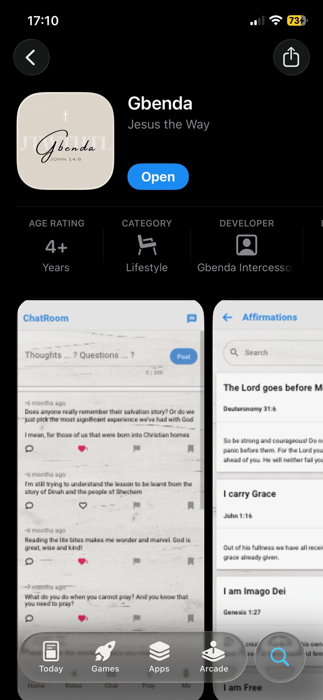
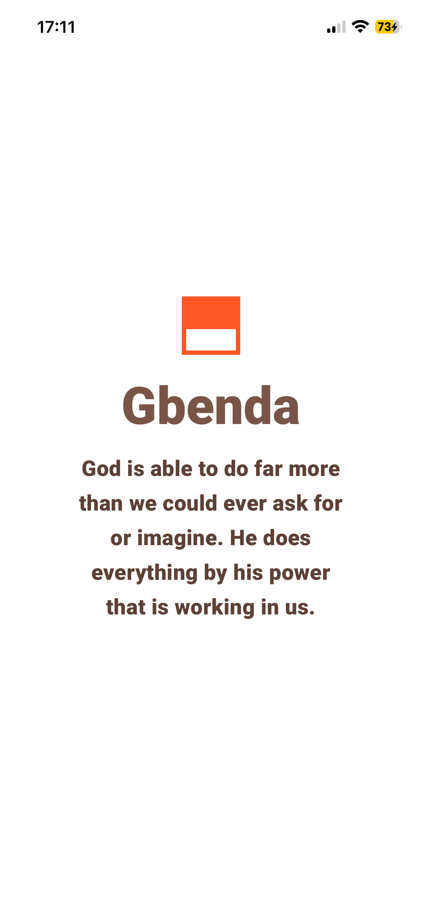
PRODUCT VISION
More than an application.
Gbenda's broader aim is to create a chain of intercessors across the globe, show people the way to eternal life, and remind people of how much God loves them.
The mobile application is one part of that broader mission: using technology to remove barriers to community, prayer, reflection, and Bible study.
LEARNINGS
What building Gbenda taught me about product management.
Start with the user experience.
Features become more meaningful when they are connected to what the user is actually trying to accomplish.
Privacy can be part of the product.
The anonymous experience was not simply a technical implementation. It directly affected how comfortable users felt participating.
Quality is part of product management.
Testing, usability, feedback, and release validation all contribute to the final product experience.
Launch creates new information.
Real users revealed needs and issues that were difficult to identify during development, reinforcing the need for continuous product iteration.
Technical depth improves product decisions.
Understanding implementation constraints helped me make more informed decisions about what could be built and how product changes would affect the application.
Early products need honest measurement.
With a small user base, direct feedback and available product data can be more useful than forcing arbitrary success metrics.
PRODUCT IN ACTION
A closer look at Gbenda.
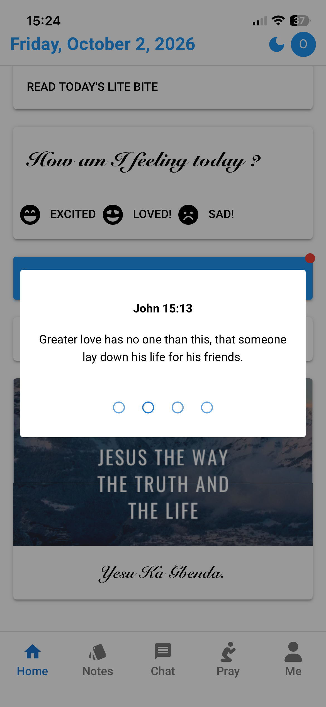
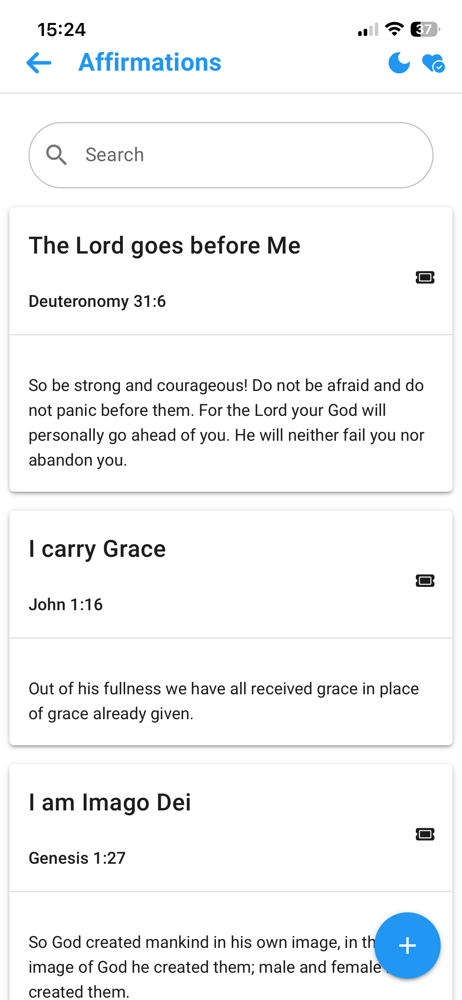
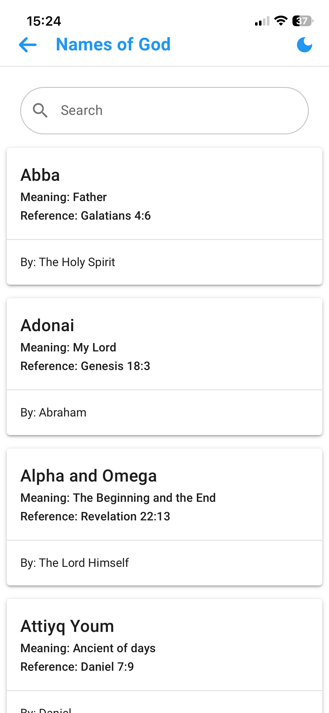
NEXT PROJECT
Focus.app
Another 0 → 1 product focused on productivity, accountability, and personal progress.
View Focus.app →